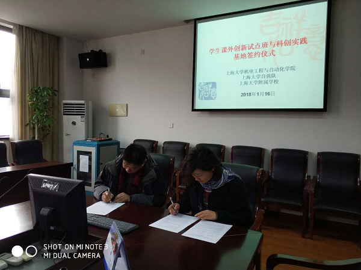
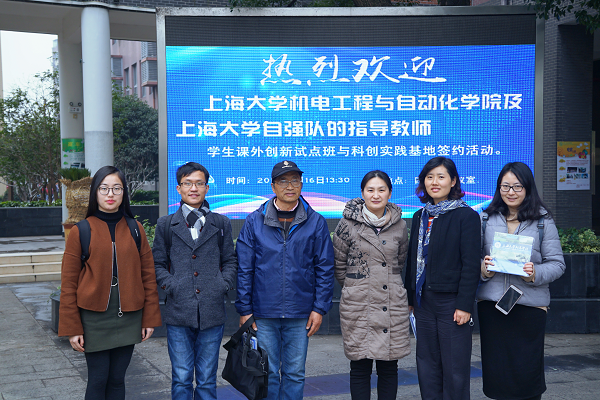

2018年1月16日下午，上海大学自强队在机自学院团委的大力支持下，与上海大学附属学校就开展学生课外创新试点班教学计划与科创实践基地建设签署了共建协议。机自学院团委书记高红梅老师、团委副书记邱之卯老师、自强队指导教师黄慎之老师、上海大学附属学校校长刘正群等出席了现场。
据悉，自强队与上海大学附属学校开展的此次共建项目，是于此前在附校开展为期半年的“机器人创新试点班”基础之上的拓展和延伸，该项目的实施依托上海大学基础教育集团的建设与发展，充分发挥了双方学校的教育和资源优势，为共同推进上海市中小学义务教育阶段的实施与上海市大学生科创能力的培养，努力构建集团内互惠互利的合作平台起到了推波助澜的作用。
签署仪式上，上海大学自强队党支部书记叶立俊同学向大家介绍了创新试点班前期的开展情况，上海大学附属学校刘正群校长和牛海云老师也对自强队的付出给予了充分的肯定与支持，并向在座的师生代表介绍了上海大学基础教育集团的发展情况与学校这几年在体育及其他学科方面所取得的卓越成绩。仪式结束后，双方师生代表在学校门前留影纪念。
上海大学自强队
2018年1月16日